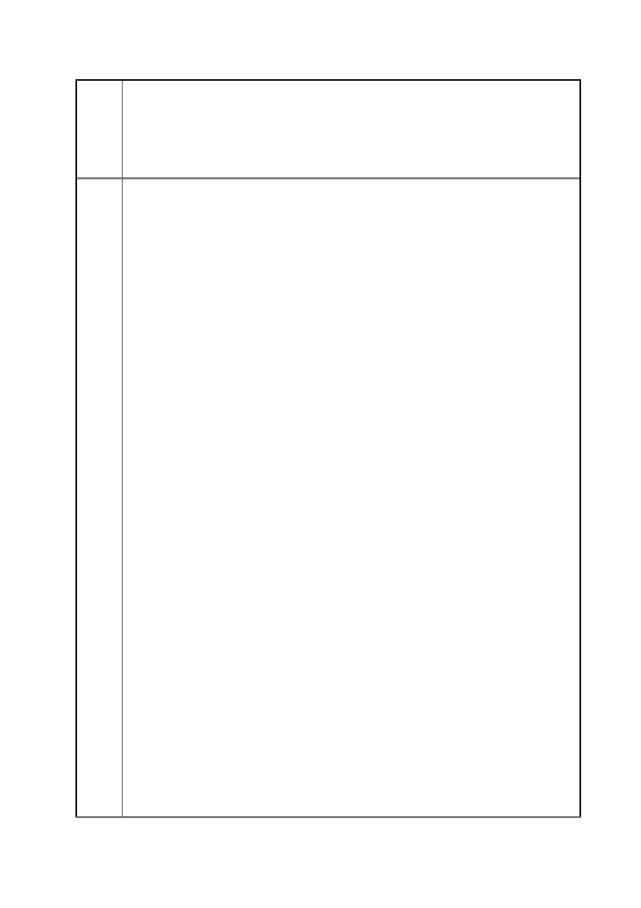

臺北市都市計畫委員會 公民或團體陳情意見綜理表
「變更臺北市信義區逸仙段二小段 33 地號等 21 筆土地（原臺北機廠）
案
名
工業區為創意文化專用區、特定專用區、道路及綠地用地主要計畫案」
及「擬定臺北市信義區逸仙段二小段 33 地號等 21 筆土地（原臺北機
廠）創意文化專用區、特定專用區、道路及綠地用地細部計畫暨劃定
都市更新地區計畫案」
其他歷史建築以鐵道紋理串聯，達成相輔相成之整合效果；特定專用
區內文化資產（澡堂、總辦公室及客車工場)未來再利用時，將保留
部分空間作為展示過去史記憶之相關活動使用；重要工業地景(東露
天吊車、移車台、重要軌道及庭園等)，則為原地保留；剩餘空間始
作為文化活動支援性設施。未來留供申請單位開發利用之特定專用
區，透過都市設計管制，規範既有鐵道設施採原貌保留復舊，並留設
廣場式開放空間保留鐵道紋理歷史脈絡。區內應保留之歷史建築、文
化地景、鐵道紋理範圍等，面積共達 10.66 公頃(約占計畫區總面積
62.60%)，實際臺鐵局可配置建築之土地面積僅約 6.37 公頃（約占計
畫區總面積 37.40%），已充分保存文化資產與鐵道文化地景。
（五）本計畫各使用分區及公共設施用地劃設目的說明如下：
1. 博物館用地：組立工場、鍛冶工場及柴電工場等古蹟及歷史
建築核心區座落土地範圍，本府規劃作為博物館園區使用，
透過既有建物保存活化，供鐵道文化展示及實境保存使用。
2. 公園用地：以鐵道文化公園方式規劃。
3. 特定專用區（一）：提供計畫區內鐵道文化與創意文化發展所
需之相關文化展演、商業購物、休閒娛樂、商務辦公、住宅
等支援設施，以複合型態的發展為主。
4. 特定專用區（二）：以延續臺北文化體育園區之商業與藝文氛
圍，提供支援性功能為主。地面層透過挑高方式保留地面之
扇形軌道紋理，高樓層則提供商務、辦公、休閒、購物等功
能。
5. 特定專用區（三）：鄰近松山高中及南側住宅社區，以提供住
宅使用為主之使用。
6. 特定專用區（四）：澡堂(市定古蹟)座落土地範圍，作為文化
展場(鐵道或勞工文化展示與教育)使用，其允許使用項目與
博物館用地相同。
7. 道路用地：將市民大道已開闢完成供道路使用部分劃設為道
路用地，以符管用合一。
8. 綠地用地：作為本計畫與南側住宅社區之緩衝空間，提供民
眾休憩及通行使用。
第 137 頁/共 154 頁